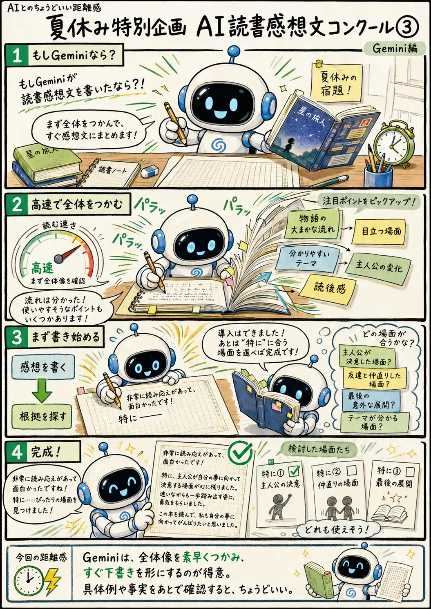

#089
夏休み特別企画 AI読書感想文コンクール③
もしGeminiが読書感想文を書いたなら？

メモ
急いで文章の方向性を決めたいときは、細部を一つずつ検討するより、まず全体像をつかみ、下書きを形にする方法が役立ちます。
Geminiは、物語の大まかな流れや目立つ場面、分かりやすいテーマを素早く拾い、すぐ読みやすい回答へまとめるように見えることがあります。
速く方向性を出したい場面では便利ですが、最初に作った結論へ合う具体例を後から選ぶと、細かな事実や文脈がずれることもあります。下書きとして受け取り、引用や具体的な場面を原文と照らし合わせると使いやすくなります。
今回の距離感
Geminiは、文章の全体像を素早くつかみ、すぐ答えの形へまとめるのが得意。でも、速く形にするほど、細かな根拠の確認が後回しになることもある。まず下書きを出してもらい、具体例や事実を一緒に確認するくらいが、ちょうどいい。